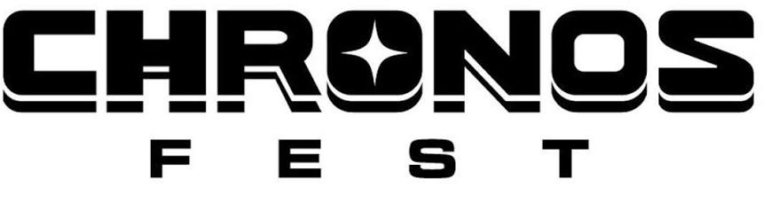
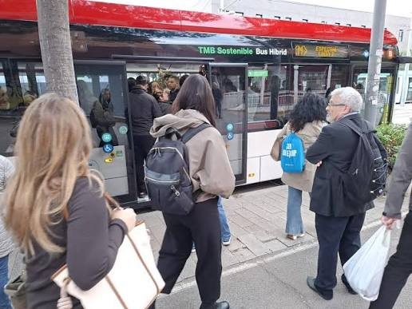

L'organització del Cronos Festival es complau a anunciar que tres noves bandes internacionals
s'incorporen a la programació d'aquest any. Aquestes incorporacions reforçaran les actuacions
nocturnes del dissabte a l'Escenari Principal.
Pensant en la comoditat del públic, enguany hem duplicat la capacitat de la zona d'acampada
situada a només cinc minuts del recinte de concerts. L'espai comptarà amb vigilància les 24
hores, dutxes amb aigua calenta i punts de càrrega gratuïts per a telèfons mòbils.

Per facilitar l'arribada i la tornada de manera segura, l'organització posarà en marxa un servei
ininterromput d'autobusos llançadora des de l'estació central de tren fins a l'entrada del festival.
Els vehicles sortiran cada vint minuts des de les 16:00 h del divendres fins a les 08:00 h del diumenge.